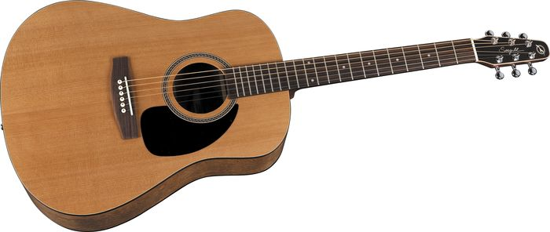

One exciting thing from waves is the musical instruments:
| Name | Symbol | Unit | Type |
|---|---|---|---|
| speed of light in a vacuum | c | m/s, meters per second | scalar |
| Frequency | f | Hz, hertz | scalar |
| absolute index of refraction | n | No Unit | scalar |
| Period | T | s, seconds | scalar |
| velocity or speed | v | m/s | scalar |
| Wavelength | λ | m, meters | scalar |
| Angle measured from the Normal Line | θ | ° | scalar |
| Angle of Incidence | θi = θ1 | ° | scalar |
| Angle of Refraction | θ2 | ° | scalar |
| index of refraction of the first substance | n1 | No Unit here. | scalar |
| index of refraction of the second substance | n2 | No Unit here. | scalar |
| Wavelength 1 | λ1 | m, meters | scalar |
| Wavelength 2 | λ2 | m, meters | scalar |
antinode, frequency, amplitude, period, wavelength, pitch, loudness, wavelength, standing wave, resonance, natural frequency
a) Which characteristic of a light wave must remain the same
as the light wave passes from glass into air?
(1) amplitude (3) period
(2) frequency (4) wavelength